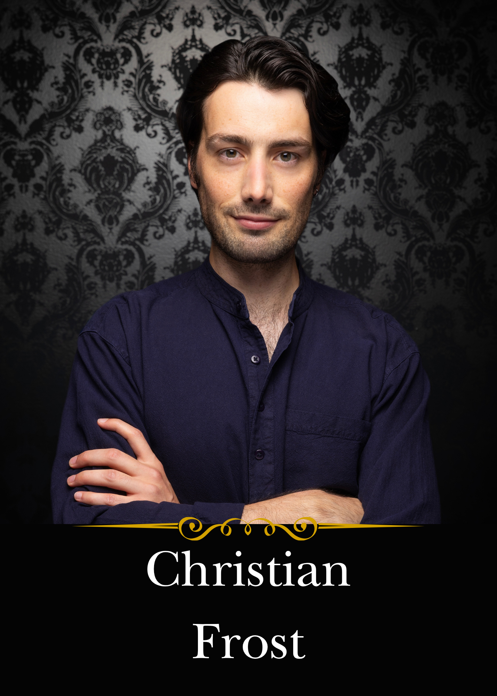

Christian Frost is absolutely delighted to be a part of this terrific company of artists. Originally a South Florida native, Christian now happily resides in NYC. Recent credits: Great Expectations and A Midsummer Night’s Dream (The Acting Company); The Horn in the West, The Odyssey, and Theodore Thudd (SAHA Theatricals); and seven seasons with The Shakespeare Theatre of New Jersey, where favorites include The Importance of Being Earnest, Sense and Sensibility, As You Like It, A Midwinter Night’s Dream, And a Nightingale Sang…, The Metromaniacs, and Much Ado About Nothing. Christian received his B.F.A. from Elon University. “For Fi.”
Buy Tickets
Drunk Shakespeare NYC · The Ruby Theatre